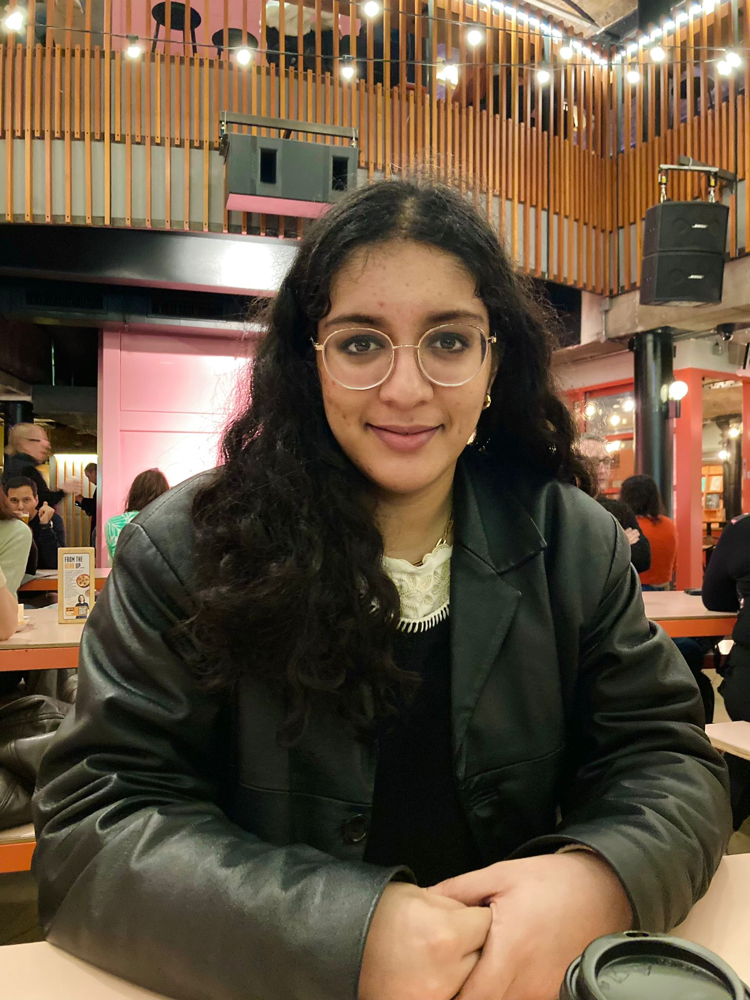

Hi! I am a third-year PhD student at the Computer Laboratory at the University of Cambridge, where I am supervised by Prof Peter Sewell and Prof Neel Krishnaswami.
My research interests include formal verification, software testing, compilers and weak memory models. My work aims to improve the reliability of low-level systems which lie at the software/hardware boundary.
Previously, I did an integrated Master's degree in Mathematics and Computer Science at Imperial College London For my Master's dissertation, I worked with Dr Azalea Raad on formal transactional memory models for non-volatile (persistent) memory.


